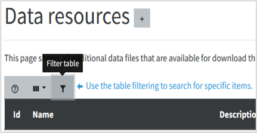
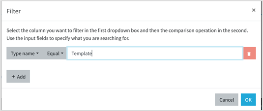

Germinate Data Importation User Guide
Contents
1. Before you start
Our goal with this manual is to help you understand how to prepare and import your experimental data effectively enabling your research outputs to be accessible and integrated within the COUSIN stakeholders via Germinate. This guide does not cover all features of Germinate. Instead, it provides step-by-step instructions tailored to ensure you can successfully complete the official project’s upload templates with your COUSIN-related datasets and then make it available to the Germinate audience. Before you start, we expect that you are already familiar with concept of Germinate platform and its general purpose regarding COUSIN project targets. If you are interested in a fully training on Germinate, an official training resource is available here: https://germinateplatform.github.io/germinate-training/
2. Template Files
COUSIN’s Germinate supports data uploads using specific Excel templates, along with a few options for text-based data templates and even images uploads. Detailed information on how to correctly complete these templates is available within the Data Uploader section, located under the User Advanced Settings menu. This feature (Upload Data) is accessible to users with the appropriate upload permissions . Additionally, a direct link to the templates can be found in the Data Resources link, providing easy access for any user. The templates are store together with other data resources of the project but with this link they are filtered among the others. Users with the Curator role are authorized to upload data into COUSIN’s Germinate platform. However, before gaining upload permissions, interested users must be designated by the project’s work package leaders and complete a training session on the data upload process. The WP5 team is always available to support and assist with data curation and the entire upload process whenever needed, ensuring accurate data management.
2.1 Downloading the templates
2.1.1 Where to find? As data uploader user role
• Access https://cousin.ipk-gatersleben.de
• In the right corner, click in the user icon and then select login (or access the login page directly https://cousin.ipk-gatersleben.de/#/login )

• Enter your login credentials and sign in.

• On right corner again, click on user icon and select Data Uploader (if this option is not available for you it means you are not allowed to upload data, but the templates will be still available check out the next topic).

• You will be redirected to the Data Upload page. This will be the page where the files will be submitted after you fill the templates with your data. At this point you just need to click in the link “Data Resources” (see figure 4).

• On Data resources pages (already filtered by file types Templates) you will have the screen above.

• Select your desired template among the Germplasm, Trials or Environment/Climate importation and click on respective Download button to have it.
2.1.2 Where to find? As regular user role

• Even being a regular user, you being a regular user, you have access to the Data resources and Templates. The easiest way to access it is through the following URL:
https://cousin.ipk-gatersleben.de/templates
This URL will redirect you directly to the importation templates (see Figure 5).
• Other way to reach the templates is by clicking the left menu, Section Data, subpage Data Resources.
• Note that by accessing Data Resources page you will be presented to all type of data resources already available among the project scope. By going this way, the importation templates will be available and you can download it.
• It’s recommended filter the template files just to avoid other data resources.
You can filter the type of data resources by, first, clicking on Filter icon (See Figure 7). A dialog box will appear. Select filter by: Type Name, the operator Equal and type Template in the input text. Click in OK button. By doing it only the template files will be shown among the other platform data resources.

Figure 7 - Filtering templates among other data resources
In the next sections the template files you downloaded will be explained and what kind of information you will provide as well.
2.2 Ex situ Passport data template
The purpose of this template is to record the passport data of ex situ accessions based on the Multi-Crop Passport Descriptor (MCPD) format. A separate template will soon be available for in situ material.
The template has been adapted for the COUSIN project. For compatibility reasons with the underlying Germinate system, there are a number of additional fields for which default values have already been entered.
• Open the Excel template file you downloaded called germplasm-mcpd-ex-situ.xlsx
2.2.1 Metadata Sheet
Open the METADATA sheet. The Metadata sheet will appear in all importation files, not only in the germplasm importation template. You will see three columns: Label (column A), Definition (column B), and Value (column C). The Label and Definition columns are pre-filled, and your task is to enter information into the Value column based on the descriptions.
2.2.1.1 Title
On cell label “Title” (A2), enter a distinct name for your data resource in the corresponding value cell (C2). This should be an official or widely recognized name that identifies the dataset. For example, you might enter “FSI collection”. The title is mandatory.
2.2.1.2 Description
On cell label “Description” (A3), provide a summary or overview of what the resource contains in the value cell (C3). This can include abstracts, outlines, or free-text explanations describing the scope of the data. For instance, “Passport Data of Pea Accessions.” The description is mandatory.
2.2.1.3 Rights
On cell label “Rights” (A4), specify statements about ownership, usage permissions, or licensing in value cell (C4). An example entry would be “Creative Commons Attribution 4.0 International Public License”. Below a list of platform suggestion of licenses (there is support for custom licenses too)
• Creative Commons Attribution 4.0 International Public License
• Creative Commons Attribution-ShareAlike 4.0 International Public License
• Creative Commons Attribution-NoDerivatives 4.0 International Public License
• Creative Commons Attribution-NonCommercial 4.0 International Public License
• Creative Commons Attribution-NonCommercial-ShareAlike 4.0 International Public License
• Creative Commons Attribution-NonCommercial-NoDerivatives 4.0Intern. Public License
2.2.1.4 Date of Creation
On cell label “Date of creation” (A5), inform the date or time span when the file was created or made available in value cell (C5). Use standardized date formatting such as ISO 8601 (YYYY-MM-DD). For example, “2023-11-15”.
2.2.1.5 Publisher
On cell label “Publisher” (A6), enter the name(s) of the person, organization, or entity responsible for distributing the dataset in value cell (C6). This may include contributors or institutions. For example, “Rodriguez-Mena, Sara; Rubiales, Diego; Consejo Superior de Investigaciones Científicas (CSIC Digital)”.
2.2.1.6 Format
On cell label “Format” (A7), describe the data’s file type or physical medium in value cell (C7). Use standard terms or MIME types if possible. Default, “application/vnd.openxmlformats-officedocument.spreadsheetml.sheet”. This default MIME type is a representation of value for Excel files.
2.2.1.7 Language
On cell label “Language” (A8), enter the language used in the dataset or documentation in value cell (C8), preferably with internationally recognized codes. Default, “ENG”. All expected project data must be informed in English. This entry shouldn’t be changed.
2.2.1.8 Source
On cell label “Source” (A9), provide reference to any original or related resources from which this dataset is derived in value cell (C9). Include URLs or identifiers if applicable. Example:
“https://www.mdpi.com/article/10.3390/plants13172454/s1”.
2.2.1.9 Type
On cell label “Type” (A10), specify the general category or genre of the resource in value cell (C10), such as dataset, report, or image. Default entry: “Dataset”.
2.2.1.10 Subject
On cell label “Subject” (A11), enter key topics or themes represented in the data using relevant keywords or classification terms in value cell (C11). For example, “Pea, Accessions”.
2.2.1.11 Contact
On cell label “Contact” (A12), provide contact information for the individual responsible for answering questions related to the dataset in value cell (C12). For example, “Diego Rubiales, diego@email.org”.
2.2.1.12 Investigation Title
On cell label “Investigation Title” (A13), write a concise, human-readable title summarizing the broader research associated with this data in value cell (C13). For example, “Passport Data of Pea Accessions”.
2.2.1.13 Investigation Description
On cell label “Investigation Description” (A14), provide a more detailed narrative explaining research aims, methods, or context in value cell (C14). Example: “Passport Data of Pea Accessions following MCPD standards.”
2.2.1.14 Investigation unique ID
On cell label “Investigation unique ID” (A15), input a unique code identifying this investigation, system-generated or institution-assigned, in value cell (C15). Leave it blank the database will assign an identification.
2.2.1.15 Associated data file link
On cell label “Associated data file link” (A16), enter a URL or persistent identifier linking directly to the dataset or digital object in value cell (C16). An example entry is “https://doi.org/10.3390/plants13172454”. Default: empty.
2.2.1.16 Associated data file description
On cell label “Associated data file description” (A17), describe the structure, format, or organization of the linked data file in value cell (C17). For instance, “Comma-separated values file containing phenotypic measurements”. Default: empty.
2.2.1.17 Description
On cell label “Associated data file version” (A18), inform a version number or identifier signaling the current iteration or release of the dataset in the corresponding value cell (C18), for example “1.0”. Default: empty.

2.2.2 MCPD DATA Sheet
• Open the Data sheet of your Excel file.
2.2.2.1 PUID
A permanent unique identifier for the unambiguous identification of an accession in a plant genetic resource collection. Only DOIs are supported. If no DOI has been assigned to the accession in question, this field must remain empty.
Example value: (empty in this dataset, e.g., " 10.25642/IPK/GBIS/1420710")
2.2.2.2 INSTCODE
FAO WIEWS code denoting the institution where the accession is held, comprising a three-letter country code and a number. Mandatory.
Example value: USA022, GBR247, ESP004
2.2.2.3 ACCENUMB
Unique accession number assigned within the genebank when the sample is entered into the collection. Mandatory.
Example value: PI 109865, PI 117910, JI0085
2.2.2.4 COLLNUMB
Original code or number assigned to the sample by collectors, often including collector initials and numbers.
Example value: 110_1, 2629, FM9909
2.2.2.5 COLLCODE
FAO WIEWS code of the institute that collected the sample. If the holding institute collected it, this matches INSTCODE.
Example value: ESP004, PRT005, USA022
2.2.2.6 COLLNAME
Name of the collecting institute; used if COLLCODE is unavailable.
Example value: “International Center for Agricultural Research”, “Local Agricultural Institute”
2.2.2.7 COLLINSTADDRESS
Address of the collecting institute, provided when the FAO WIEWS code is missing.
Example value: “Km 17 Autopista Duarte, Santo Domingo, Dominican Republic”
2.2.2.8 COLLMISSID
Code for the collecting mission, e.g., specific expedition or project identifier.
Example value: E002, CIATFOR-052
2.2.2.9 GENUS
Genus name of the accession’s taxon, capitalized. Mandatory.
Example value: Pisum
2.2.2.10 SPECIES
Species epithet in lowercase or abbreviation ‘sp.’
Example value: sativum, fulvum, abyssinicum
2.2.2.12 SUBTAXA
Additional taxonomic classification such as subspecies or variety.
Example value: subsp. arvense, subsp. jomardii, var. abyssinicum
2.2.2.14 CROPNAME
Common crop name.
Example value: Pea
2.2.2.15 ACCENAME
Registered or given name of the accession distinct from donor or collecting numbers, such as variety name or landrace name.
Example value: ARVEJAS AMARILLAS, CPI 135298, P.SATIVUM-ALBANIA
2.2.2.16 ACQDATE
Date accession was added to the collection, formatted YYYYMMDD. Missing days and months can be replaced with zeros or hyphens.
Example value: 19350123, 19810801, 19780700, 1975----
2.2.2.17 ORIGCTY
Three-letter ISO country code denoting the accession’s country of origin. Please only use this field for material collected or bred in a certain country. Don’t use it to indicate the country a germplasm collection is located at.
Example value: VEN, IRN, ESP, TUR, USA
2.2.2.18 COLLSITE
Sub-national location details describing where the accession was collected.
Example value: Caracas, Tehran, Asturias; Asturias; Lena; Llanos de Someron
2.2.2.19 DECLATITUDE
Latitude coordinates in decimal degrees; positive north, negative south.
Example value: 10.4943, 35.6892, -34.6037, 48.14
2.2.2.20 LATITUDE
Latitude coordinates in degrees, minutes, seconds (DMS) format. Degrees (2 digits) minutes (2 digits), and seconds (2 digits) followed by N (North) or S (South) (e.g. 103020S). Every missing digit (minutes or seconds) should be indicated with a hyphen. Leading zeros are required (e.g. 10----S; 011530N; 4531--S).
2.2.2.21 DECLONGITUDE
Longitude in decimal degrees; positive east, negative west.
Example value: -66.9029, 51.389, -58.3816
2.2.2.22 LONGITUDE
Longitude in DMS format. Degrees (3 digits), minutes (2 digits), and seconds (2 digits) followed by E (East) or W (West) (e.g. 0762510W). Every missing digit (minutes or seconds) should be indicated with a hyphen. Leading zeros are required (e.g. 076----W).
2.2.2.23 COORDUNCERT
Estimated uncertainty of the coordinates in meters. Leave blank if unknown.
Example value: (blank) / 50 / 100
2.2.2.24 COORDDATUM
Datum or spatial reference system of the geographic coordinates.
Example value: WGS84, NAD83
2.2.2.25 GEOREFMETH
Method used to determine coordinates (GPS, map estimation, gazetteer, etc.).
Example value: GPS, gazetteer, estimated from map
2.2.2.26 ELEVATION
Height above sea level of the collection site in meters; negative allowed.
Example value: 865, 161, 526, -15
2.2.2.27 COLLDATE
Date sample was collected, formatted as YYYYMMDD.
Example value: 19780700, 19810801, 19350123
2.2.2.28 BREDCODE
Code of breeding institute that developed accession, if applicable.
Example value: ESP040, PRT005
2.2.2.29 BREDNAME
Name of breeding institute or breeder in case that no FAO WIEWS code is available.
Example value: “Fox, K.”, “Dolan, D.D.”
2.2.2.30 SAMPSTAT
Biological status code indicating accession type (wild, landrace, breeding material, etc.).
Example value: 300 (traditional cultivar). Below there is a list of accepted CODE values:
| Code | Description |
|---|---|
| 100 | Wild |
| 110 | Natural |
| 120 | Semi-natural/wild |
| 130 | Semi-natural/sown |
| 200 | Weedy |
| 300 | Traditional cultivar/landrace |
| 400 | Breeding/research material |
| 410 | Breeder’s line |
| 411 | Synthetic population |
| 412 | Hybrid |
| 413 | Founder stock/base population |
| 414 | Inbred line (parent of hybrid cultivar) |
| 415 | Segregating population |
| 416 | Clonal selection |
| 420 | Genetic stock |
| 421 | Mutant (e.g., induced/insertion mutants, tilling populations) |
| 422 | Cytogenetic stocks (e.g., chromosome addition/substitution, aneuploids, amphiploids) |
| 423 | Other genetic stocks (e.g., mapping populations) |
| 500 | Advanced or improved cultivar (conventional breeding methods) |
| 600 | GMO (by genetic engineering) |
2.2.2.31 ANCEST
Information about the pedigree or ancestral origin of the accession. ANCEST requires a pedigree.Line selections from existing accessions etc. should be indicated in the remarks + donor fields.
Example value: Leave it empty if you are not informed about the pedigree.
2.2.2.32 COLLSRC
Source habitat from which the accession was collected (wild, farm, market, etc.).
Example values: 20 (farm), 10 (wild habitat)
| Code | Description |
|---|---|
| 10 | Wild habitat |
| 11 | Forest or woodland |
| 12 | Shrubland |
| 13 | Grassland |
| 14 | Desert or tundra |
| 15 | Aquatic habitat |
| 20 | Farm or cultivated habitat |
| 21 | Field |
| 22 | Orchard |
| 23 | Backyard, kitchen or home garden (urban, peri-urban or rural) |
| 24 | Fallow land |
| 25 | Pasture |
| 26 | Farm store |
| 27 | Threshing floor |
| 28 | Park |
| 30 | Market or shop |
| 40 | Institute, Experimental station, Research organization, Genebank |
| 50 | Seed company |
| 60 | Weedy, disturbed or ruderal habitat |
| 61 | Roadside |
| 62 | Field margin |
2.2.2.33 DONORCODE
FAO WIEWS code identifying the donor institution.
Example value: DEU146, NLD078, ESP040
2.2.2.34 DONORNAME
Name of the donor institute or person providing the accession in case that no FAO WIEWS code exists.
Example value: “Van Soest, L.”, “Blixt, S.”
2.2.2.35 DONORNUMB
Accession number assigned by the donor.
Example value: "PIS 1162", "WBH 2029"
2.2.2.36 OTHERNUMB
Any other identifiers known to exist in other collections for this accession. Format : INSTCODE:ACCENUMB;INSTCODE:identifier; INSTCODE and identifier are separated by a colon without space. Pairs of INSTCODE and identifier are separated by a semicolon without space. When the institute is not known, the identifier should be preceded by a colon.
2.2.2.37 DUPLSITE
FAO WIEWS code of institutes holding safety duplicates of the accession.
Example value: ESP040, NLD078
2.2.2.38 DUPLINSTNAME
Names of institutes where safety duplicates are stored in case that no FAO WIEWS code exists.
Example value: "CGN", "IPK"
2.2.2.39 STORAGE
Type(s) of germplasm storage used (e.g., seed, cryopreservation).
Multiple types are allowed.
Example values: 10 (seed), 40 (cryopreserved). Below there is a list of accepted CODE values:
| Code | Description |
|---|---|
| 10 | Seed collection |
| 11 | Short term |
| 12 | Medium term |
| 13 | Long term |
| 20 | Field collection |
| 30 | In vitro collection |
| 40 | Cryopreserved collection |
| 50 | DNA collection |
2.2.2.40 MLSSTATE
Status regarding inclusion in the Multilateral System of the International Treaty:
| Value | Description |
|---|---|
| 0 | No |
| 1 | Yes |
2.2.2.41 REMARKS
Additional notes or comments related to the accession, including explanations for “other” codes.
This is a free text entry.
2.2.3 Info Sheet
• This is an informational sheet detailing the MCPD data standard. You will find on this sheet the same information as presented here above covering the Multi Crop Passport Data entries. This sheet will not receive any data, is just for user reference.
2.3 Trials Importation Template
The purpose of this template is recording standardized plant trial information alongside measurements and other important data for plant material (accessions) used in the trial.
• Open the excel template file you downloaded called trials-data.xlsx
2.3.1 Trials Metadata Sheet
• Please refer to the Metadata information on MCPD file template. As mentioned before on this guide the Metadata sheet of the templates is the same.
2.3.2 Phenotypes Sheet
• Here is the sheet where you register the trait variables (phenotypes) that you are observing

2.3.2.1 NAME
This is the full name or identifier of the trait variable used in the experiment. It typically uniquely identifies each trait (Column A).
Example value: Plant height
2.3.2.2 SHORT NAME
A shorter or abbreviated name for the phenotype variable, useful for compact display or referencing (Column B).
Example value: PH
2.3.2.3 DESCRIPTION
A detailed explanation of what the phenotype variable represents or measures in the experiment (Column C).
Example value: Vertical measurement of a plant from its base to its highest point
2.3.2.4 DATA TYPE
The type of data the phenotype variable holds, such as text, date, numeric or categorical – domain like (Column D).
Example value: numeric
| Data Type | Definition |
|---|---|
| Text | Data representing textual content |
| Numeric | Data representing numbers (integers, decimals, etc.) |
| Date | Data representing points or intervals in time (e.g., date DD-MM-YYYY) |
| Categorical | Data representing distinct groups or categories (e.g., colors: red, green, …) |
2.3.2.5 UNIT NAME
The full name of the unit of measurement for the variable, if applicable (Column E).
Example value: centimeter
2.3.2.6 UNIT ABBREVIATION
The abbreviated symbol for the measurement unit, if applicable (Column F).
Example value: cm
2.3.2.7 UNIT DESCRIPTIONS
Additional information or clarifications about the units used. (Column G).
Example value: Used to measure the plant height
2.3.2.8 TRAITS CATEGORIES
Categories or groups that the trait belongs to, especially important for categorical variables, listing possible values (Column H). It means that if you have a trait with data type categorical and controlled values in a list you must set here the allowed values.
Example value: Colors of plant pods: “Red, Green, White”…
2.3.2.9 MIN (only for numeric traits values)
The minimum expected or allowed numeric value for the trait. This field is empty if not specified (Column I).
Example value: 0
2.3.2.10 MAX(only for numeric traits values)
The maximum expected or allowed numeric value for the trait. This field is empty if not specified (Column J).
Example value: 10
2.3.2.11 SIZE
The number of elements returned for each observation of the trait. This is the trait’s dimensionality. For the project will be using 1 for single-value phenotypes (Column K).
Example value: 1
2.3.2.12 IS TIMESERIES
Indicates whether the trait is part of a timeseries dataset to be shown on Germinate (boolean-like). (Column L).
Example value: FALSE
2.3.3 Attributes Sheet
• This sheet contains meta data information about the covering whole experiment and applies to every trait (without individual variation values). Inform the attribute name, data type and value (see image below)

2.3.4 Trials Data Sheet

• This sheet contains information about the observed trials data. The dynamic content columns start by column K, that means the trials variables from sheet Phenotypes should be listed from column K and then.
• The most important on this sheet is the usage of accession numbers of registered material (germplasm) on MCPD passport data (column Line/Phenotype).
2.3.4.1 LINE/PHENOTYPE
The identifier or name of the genetic line or phenotype under study. Must be an accession number referenced on database/MCPD uploaded data. Mandatory column. (Column A).
Example value: PI 204305
2.3.4.2 REP
The replicate number indicating the repetition of the experimental unit (Column B).
Example value: 1
2.3.4.3 BLOCK
The block number in which the experimental unit is placed (Column C).
Example value: 2
2.3.4.4 ROW
The row number of the experimental unit within the block or field layout (Column D).
Example value: 5
2.3.4.5 COLUMN
The column number of the experimental unit within the block or field layout (Column E).
Example value: 3
2.3.4.6 TREATMENT
The experimental or specific treatment assigned to this unit (Column F). This column represent a previous conception of trait data with fixed column refering the treatment. This column should be leave empty.
2.3.4.7 LOCATION
The name or description of the location where the experiment is conducted (Column G). This information is only needed if more than one sites/location was used in the experiment, otherwise just use the sheet Location.
Example value: Field Station 01
2.3.4.8 LATITUDE
The geographic coordinate specifying the north-south position of the experimental location (Column H). Like location is only needed if more than one sites/location was used in the experiment, otherwise just use the sheet Location.
Example value: 45.123456
2.3.4.9 LONGITUDE
The geographic coordinate specifying the east-west position of the experimental location (Column I). Like location is only needed if more than one sites/location was used in the experiment, otherwise just use the sheet Location.
Example value: -120.654321
2.3.4.10 ELEVATION
The height above sea level of the experimental location, typically in meters (Column J). Like location is only needed if more than one sites/location was used in the experiment, otherwise just use the sheet Location.
Example value: 250
2.3.4.11 EXPERIMENT ID (FIRST COLUMN WITH TRAIT VARIABLES AND VALUES) …
Variable: A numeric identifier referring to the specific experiment (Column K). From column K and beyond you will enter your variables and respective values. The variables must be the same stated on Phenotype sheet.
Example value: EXP 21
2.3.5 Recording Dates Sheet
• This sheet can still blank. In this stage of the project we choose not use the records of observed dates of variables individually on this sheet. The idea is to have the observed dates directly as variables on data sheet and avoid duplication of information.
2.3.6 Attributes Sheet
• This sheet contains information about the trial as a whole. This information is customizable and will set the data for all entries observed. Example: During the trials there was daily irrigation at 8am independent of the other trials measured or a specific treatment.
2.3.6.1 ATTRIBUTE
The name or label of the specific characteristic or feature being described (Column A).
Example value: Irrigation
2.3.6.2 TYPE
The data type describing the kind of information the attribute holds, such as text, numeric, or categorical (Column B).
Example value: text
2.3.6.3 VALUE
The content or measurement corresponding to the attribute, providing the specific details or data (Column C).
Example value: Daily irrigation at 8am, 200ml per square metre
2.3.7 Collaborators Sheet
• This sheet contains information about the owners/creators of the dataset/experiment and all collaborators references.
2.3.7.1 LAST NAME
Last name (surname) of the author(s), researcher(s), scientist(s), or student(s) responsible for producing the information product (Column A).
Example value: Rubiales
2.3.7.2 FIRST NAME
First name (and middle name if available) of the author(s), researcher(s), scientist(s), or student(s) responsible for producing the information product (Column B).
Example value: Diego
2.3.7.3 CONTRIBUTOR ROLE
Type of contribution of the person to the investigation (e.g., data submitter, author, corresponding author) (Column C).
Example value: Author
2.3.7.4 CONTRIBUTOR ID
An identifier for the data submitter. If the submitter is an individual, ORCID identifiers are recommended (Column D).
Example value: 0000-0001-9644-8616
2.3.7.5 EMAIL
E-mail address of the author(s), researcher(s), scientist(s), or student(s) responsible for producing the information product (Column E).
Example value: diego.rubiales@...
2.3.7.6 PHONE
Phone number of the author(s), researcher(s), scientist(s), or student(s) responsible for producing the information product (Column F).
Example value: +34-555-123-456
2.3.7.7 CONTRIBUTOR (INSTITUTION)
Author’s affiliation when the resource was created (Column G).
Example value: Institute for Sustainable Agriculture (CSIC)
2.3.7.8 ADDRESS
Address of the institution of affiliation when the resource was created (Column H).
Example value: Avenida Alcalde Conde Mayalde, 14004 Córdoba
2.3.7.9 COUNTRY
The two-letter country code of the institution (ISO 3166-1 alpha-2) (Column I).
Example value: ES
2.3.8 Location Sheet
• This sheet has the information about the location where the experiment occurred. This information is mandatory (Location name), but just if only one location is recorded. If the trials experiment belongs to more than one site/place this information should be informed on separate importation files for each location.
2.3.8.1 NAME
This is the full name or identifier of the location or site (Column A).
Example value: Balruddery Farm
2.3.8.2 SHORT NAME
A shorter or abbreviated name for the location or site (Column B).
Example value: Balruddery
2.3.8.3 COUNTRY
The two-letter country code representing the country where the location is situated (Column C).
Example value: GB
2.3.8.4 ELEVATION
The height above sea level of the location, typically measured in meters (Column D).
Example value: 110
2.3.8.5 LATITUDE
The north-south geographic coordinate of the location, given in decimal degrees (Column E).
Example value: 56.481156
2.3.8.6 LONGITUDE
The east-west geographic coordinate of the location, given in decimal degrees (Column F).
Example value: -3.1279887
2.4 Environmental (Climate) Importation Template
The purpose of this template is to record environmental data capturing specific information about the experiment location such as climate, applied treatments, and related contextual variables and event dates.

• Open the Excel template file you downloaded called environmental-data.xlsx
2.4.1 Environmental (Climate) Metadata Sheet
• Please refer to the Metadata information on MCPD file template. As mentioned before on this guide the Metadata sheet of the templates is the same.
2.4.2 Environmental Variables Sheet
• Like the traits variables, here you will set the environmental variables. This information belongs to the location. While the traits are related to the accessions, the environment (climate) variables are linked to the location.
2.4.2.1 NAME
This is the full name or identifier of the environment variable used in the experiment. It typically uniquely identifies each enviroment variable (Column A).
Example value: Longterm Mean of Temperature
2.4.2.2 SHORT NAME
A shorter or abbreviated name for the environment variable, useful for compact display or referencing (Column B).
Example value: long_mean_temp
2.4.2.3 DESCRIPTION
A detailed explanation of what the environmental variable represents or measures in the experiment (Column C).
Example value: Average temperature over multiple years at the location.
2.4.2.4 DATA TYPE
The type of data the phenotype variable holds, such as date, numeric or categorical – domain like (Column D).
Example value: numeric
2.4.2.5 UNIT NAME
The full name of the unit of measurement for the variable, if applicable. (Column E).
Example value: Celsius
2.4.2.6 UNIT ABBREVIATION
The abbreviated symbol for the measurement unit, if applicable (Column F).
Example value: ℃
2.4.2.7 UNIT DESCRIPTIONS
Additional information or clarifications about the units used (Column G).
Example value: Temperature in Celsius.
2.4.3 Environmental (Climate) Data Sheet
• For the environmental (climate) data you will need to attach the variables to the location and a date of observation (column A and B respectively). From column C and beyond you should enter your variables.
2.4.3.1 LOCATION/CLIMATE
The identifier or name of the location of the study. (Column A)
Example value: Balruddery
2.4.3.2 DATE
Date the environmental variable was observed, formatted YYYYMMDD (Column B).
Example value: 1
2.4.4 Attributes Sheet
This sheet contains information about the environment(location) as a whole. This information is customizable and will set the data for all entries observed. Same approach as Trials attribute sheet.
2.4.5 Location Sheet
This sheet has the information about the location where the experiment occurred. This information is mandatory (Location name). Same approach as Trials attribute sheet.
3 Uploading Process
3.1 Data Uploader page
• After login, go right corner, click on user icon and select Data Uploader (See figure 3).
• You will be presented to several options of data upload (Figure 8). This version of the user guide will cover and explain the upload process of Climate (Environmental), MCPD (Germplasm material) and Trials data. The foundation of upload process is the same for every data type, but there are some details that will be observed.
• The upload system has a data checking feature that will analyze your data searching for missing or incorrect data considering the templates requirements.
• Sometimes, the files to be uploaded have a huge amount of information and are big file sized. The Germinate platform is prepared to deal with it by uploading and checking data in the background without blocking or interrupting the user interaction.


3.2 The Download/Upload Asynchronous Bar
Certain importations using Germinate might require a few minutes to complete, especially since some datasets contain millions of genetic markers and hundreds of thousands of germplasm entries. The asynchronous downloads/uploads, allows you to submit a data request and continue using the platform while the query processes. Once the data is prepared, the interface will notify you eliminating the need to wait idly. You will be familiarized with this side bar since all information about the upload of data will be shown here.3.3 Ex situ Passport Data Upload
The very first data upload will be the information about the material you used on your experiments. The germplasm information follows the Multi-Crop Passport Descriptors (MCPD).
• On uploader page click the MCPD box (Fig. 12).
• In the bottom of the page an input file element will be available. Select your germplasm data importation file and click on Upload and Check button.

• You will notice that you have a selection button to choose between insert new data (default) or in case you need to update information about any germplasm, and knowing the former accession number, you can pick the update option.
• Click on Upload and Check.
3.3.1 Got an error?

After uploading your data, the asynchronous box will display the processing status. If an error occurs during the upload, an error message will appear in this box,(View Feedback) informing you that there is an issue with the submitted data.
You can review the details provided to identify which parts of the template contain incorrect or missing information. This allows you to quickly pinpoint and correct the errors before attempting to upload the data again. If any help is needed you can contact the WP5 team and send the error report (fig. 15) to allow our analyzes.

3.4 Trials/Climate Data Upload
On trials upload there is a difference from MCPD. The “Dataset state” indicate the accessibility level of the dataset:
• Public (blue button with an open lock icon): This setting means the dataset is accessible to all users without restrictions.
• Private (blue button with a locked padlock icon): This restricts access to authorized users only, keeping the dataset confidential.
• Hidden (blue button with an eye and strike-through icon): The dataset is concealed from general view and only accessible by specific users or administrators.
Below these options, the green Upload and check button allows you to upload your dataset file and automatically verify its contents for errors or inconsistencies before making it available. The process is the same as MCPD.
4 Final considerations
This user guide has introduced the three main templates used for uploading data, each designed to capture specific types of information critical to your project. Ensuring the correctness and completeness of data entered into each template is essential for successful processing and analysis. Carefully review the required fields and adhere to the specified formats to avoid errors during upload. When uploading your data, use the provided interface tools to submit your files. The system includes validation checks to identify any inconsistencies or missing information, which will be communicated back through error messages or notifications. Pay close attention to these messages and make any necessary corrections before re-uploading.
Following these guidelines will help ensure that your data is accurately incorporated into the COUSIN Germinate platform facilitating smooth workflows and reliable results. Should you encounter any difficulties, refer back to this manual or seek assistance from WP5 project’s representants.